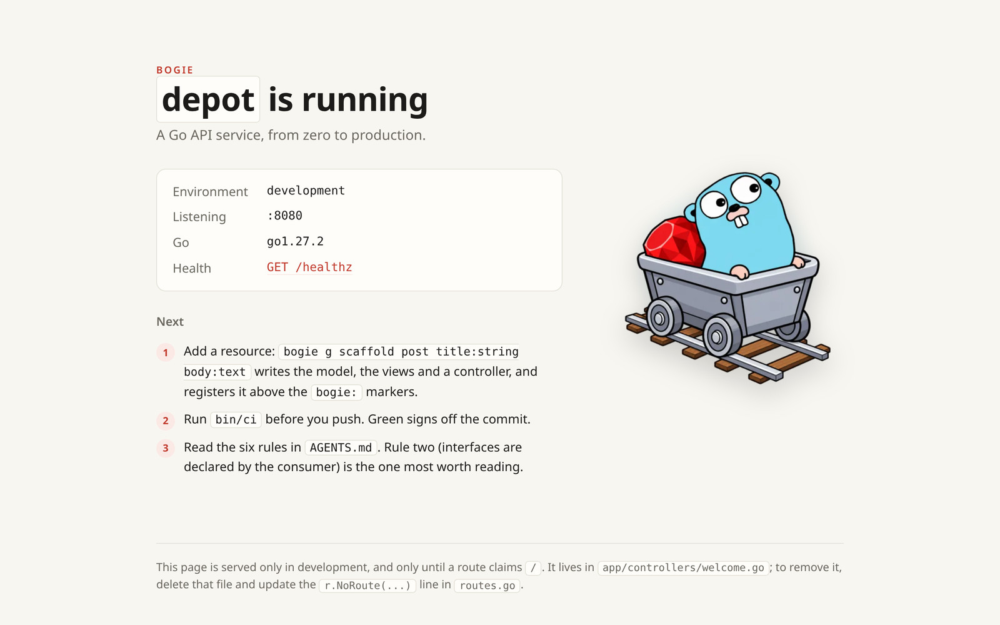

Free chapters
This is the same free sample Leanpub offers: the Introduction and Chapters 1 and 2 of Bogie: How to Go from Zero to Production. The rest of the book is in the full edition, on Leanpub and Kindle.
Introduction
Welcome to Bogie: How to Go from Zero to Production — Conventions for AI-Assisted Go.
I'm Mac, and I lead engineering teams for a living. For most of my career, my main tool was Ruby on Rails. Then Go came into my work, and I found that learning Go has one challenging part, and it isn't the language: there's too much information out there, and everyone does Go their own way.
I work at a software agency, and we have many, many experts in Go. But when I asked for help setting up a project for a client, each one went a different way, and no one could say which way to go. I know that learning to code takes time. Delivering work for a client can't wait. We needed something reliable, and just enough.
So for years, I coded Go with conventions I built for myself. Then I hit the next problem: even when I knew exactly what to do, Go needed a lot of typing, and a lot of places to check to make everything work together. It was time-consuming, and it was another pain. Then an idea came: what if we could work like Rails, but in Go? What if a generator saved us the time? AI can write code too nowadays, but a generator plus AI saves you a lot more time than either alone. And so Bogie was born.
This book is what I wish I'd had at the start of it.
Who This Book Is For
The main reader I had in mind is me, a few years ago: an experienced programmer who wants to deliver value with Go, quickly. You've built web applications before, in Ruby, Python, JavaScript, PHP, Java, or something else. You know what a route, a database migration, and an HTTP status code are. What you don't have yet is Go, or a way to structure a Go web app that a whole team can share.
If you're newer to programming, or to Go, you're welcome too. You don't need any Go experience: Chapter 2 teaches the Go you need to read the shop's code, and short "Knowing Go" boxes teach the rest at the moment the shop needs it. I'll compare with Rails now and then, because it's what I know best, but you don't need to know Rails to follow along.
And if you already work with an AI coding assistant, this book is for you too. The conventions you'll learn here are exactly what an assistant needs to follow, and Chapter 20 shows how to make sure it does.
Either way, I hope Bogie saves you the time it saves me.
Before You Start
One piece of advice: open your mind. Some of what I do in this book may not be the usual "Go way". Experienced Go developers will notice generators, conventions borrowed from Rails, and opinions about where each piece of code belongs. I'm not asking you to agree with all of them. I'm hoping the good things I've brought will make your life easier, and that by the end, you'll know exactly why each decision was made, so you can keep it, change it, or break it on purpose.
What You'll Build
You'll build Bogie Depot, a complete online shop for Bogie merchandise: stickers, mugs, desk mats, keycaps. The name is a nod to the Depot store from Agile Web Development with Rails, the book many developers first learned Rails from.
The purpose of this book is to teach you to do the real thing, the right way, so the shop is real too. It's the backend: a JSON API, with small HTML pages in front of it that call the API, so you can see every feature in a browser. Along the way, it gets a catalog, a cart for every visitor, customer accounts, sales and coupons that chain together in a pricing pipeline, checkout with real transactions, an admin area for staff, confirmation emails sent in the background, and the monitoring and backups a live shop needs. A real shop is living proof: by the end, you won't have to take my word for what Bogie is worth, because you'll have seen it.
And it goes all the way to production. In Chapter 16, you'll deploy your own copy to a server and a domain of your own. Then you'll ship a change while a loop of requests runs against the shop in another terminal, and watch it print 200, again and again, as the new version quietly takes over from the old one. Not one request fails. When you start Chapter 1, you won't have written a line of Go.
I play the shop's owner, and most chapters start the way real work does: with a request or a problem report, one at a time. Usually it's from me ("I want customers to see what we sell", "How do I know the shop is OK while I'm asleep?"); sometimes it's from a customer, a reviewer on the team, my staff, or a friend who wants to build a mobile app against the API. Each chapter delivers what it asks for.
The Tool: Bogie
The shop is built with Bogie, a code generator for Go web apps. Bogie makes the decisions every Go web app needs and few teams want to argue about: where code goes, how it talks to the database, how errors are answered, how tests are written, how the app is deployed. Then it generates code that follows those decisions, so every part of the app is built the same way.
Bogie isn't a framework. There's nothing running underneath your app: the code it generates is ordinary Go, with comments explaining why it's written the way it is, and it belongs to you. Your app doesn't even import Bogie. Chapter 19 explains every decision it makes.
I believe that cool code shows itself over time, but working with others to deliver business value together can't wait. Let something draft the code, then focus on the logic: that's the way to go in the AI era. I hope Bogie brings you joy in doing that, with Go. Every Bogie app comes with a guide that teaches an AI assistant its conventions, and Chapter 20 adds a small guard that keeps an assistant from hand-editing the files the generators own.
How This Book Is Structured
The book has twenty-one chapters, in three parts.
Part I, Getting Started (Chapters 1 and 2), gets a Go web app running, and its first API endpoint answering, before you write a line of Go. Then it teaches just enough Go to read the code Bogie generated, from that code itself.
Part II, Building Bogie Depot (Chapters 3 to 17), builds the shop, one request at a time: reading and owning the catalog, rules and tests, carts, a sale, accounts, orders, staff, email, a deployment, and monitoring. From Chapter 4 on, every feature comes with its tests, and from Chapter 5, they're written from the outside in: starting from what a client of the API sees. Three of these chapters are optional: Chapters 12 and 13 extend the shop, and Chapter 15 writes a contract for its API. Each one says, at its top, how to skip it and carry on.
Part III, Beyond the Depot (Chapters 18 to 21), steps back to look at Bogie itself: what the shop would have taken with Go's standard library alone, what Bogie generates and why, how to make an AI assistant follow its conventions, and when to break them. It ends with where to go next.
Six appendices follow, for quick reference: the SQL the book uses (A), Rails ideas and their Bogie equivalents (B), Bogie's commands and the tools it brings (C), a deploy and troubleshooting cheat sheet (D), Go essentials, explained through the shop (E), and a Go quick reference (F).
The chapters build on each other, so read them in order the first time. Part II especially: each chapter starts from the code the previous one ended with.
What You'll Need
- A computer running macOS, Linux, or Windows with WSL.
- Go 1.26 or newer. Chapter 1 installs it.
- Docker. The shop's database runs in Docker during development, so you don't install Postgres yourself.
- Bogie v1.0.0. Chapter 1 installs exactly this version, so everything you see matches the book.
- A code editor with Go support. Appendix F suggests a couple.
- Git, and some familiarity with the command line.
- A reading knowledge of SQL. You'll write queries, but each new piece of SQL is explained when it first appears.
Two chapters need a little more. Chapter 14 sends email, which runs against a fake mail server in development; for the live shop, you'll want an account with an email provider. And Chapter 16 deploys the shop, which needs a small virtual server, a domain name you control, and Kamal, the deployment tool, which Chapter 16 installs. You can read both chapters without them, and come back when you're ready to go live.
How to Read the Code
The book has a lot of code, and every listing follows the same conventions.
Every listing has a label that says where to find it in the companion repository, described below: ch03-show-the-catalog/app/views/products.go is the file app/views/products.go, in Chapter 3's folder. That folder holds the file as it is at the end of the chapter, so a listing from earlier in the chapter may show an earlier version of it; the ➤ marks show what that listing changes. Chapters 2 and 18 are small programs written step by step, so every step has its own folder, and a label like ch02-just-enough-go/checkpoints/ch02_03/scratch/main.go matches the listing exactly.
A new file is shown in full. A changed file shows only what changed. It starts with the file's first line, the package line in Go, so you always know which file you're in. Then // ... stands for everything that stays the same, in SQL -- ..., and the lines you add or change are marked with ➤ in the margin. When a file's imports change, the import block is shown, with ➤ on the new imports.
Command-line examples show what you type, and, where it helps, what you should see in reply. A \ at the end of a line means the command continues on the next line.
Screenshots show the shop's pages at the moment they first appear.
Boxes
A few kinds of box add to the main text.
- Knowing Go teaches one Go idea, at the moment the shop first uses it. If you're new to Go, read these; Appendix E explains the same ideas in more depth.
- Background explains an idea in more depth: how something works underneath, or where it comes from.
- Watch Out warns about a mistake that's easy to make, or a step that's easy to miss.
- Under the Hood looks inside something you've been using, like what's really inside a token.
- Playtime suggests an exercise at the end of a chapter, to try on your own with everything you've learned so far.
The Companion Repository
Everything you build is in the companion repository:
github.com/bogie-go/book-bogie-how-to-go-from-zero-to-production
It has one folder per chapter, named like the chapter's file: ch03-show-the-catalog, ch10-take-orders, and so on. Each folder holds the code as it stands at the end of that chapter, with a README saying how to run it. From Chapter 1 on, each shop folder is a full copy of the app at the end of the chapter; Chapters 2 and 18's folders also have a checkpoints/ folder with every step. If you get stuck partway through a chapter, compare your files with the end-of-chapter folder, or start the next chapter from it. That's also how the optional chapters work: skip one, and start the next chapter from the skipped chapter's folder.
The repository never contains credentials or their keys. To run a folder's code, create your own development credentials; the folder's README shows how.
The repository also has the shop's web pages. This is a book about the backend, so you won't write HTML or JavaScript. Instead, each chapter that changes the pages tells you which files to copy from that chapter's public/ folder into your app's public/ folder. The pages are plain HTML, each one a single file with its own CSS and JavaScript, and they call the API you've built, so you can see each feature working in a browser. UI-PAGES.md, at the top of the repository, lists every page, chapter by chapter, with what changed.
A Note on Versions
Bogie is young, and it changed while I wrote this book; writing the book was one of the ways it improved. To keep what you see matching what you read, the book pins Bogie to one version, v1.0.0, and Chapter 1 installs exactly that one. Bogie follows semantic versioning, so anything that would break what this book shows ships as a new major version, and @v1.0.0 keeps working. When you've finished the book, upgrading to the newest Bogie is one command, and Appendix C shows how bogie app:update brings an existing app along with it.
Getting Help
If something in the book doesn't match what you see, or doesn't work, first compare your code with the chapter's folder in the companion repository. If that doesn't explain it, open an issue on the repository, saying which chapter and listing you're on. Every report makes the book better for the next reader.
Now, let's get started. In Chapter 1, you'll have a Go web app answering its first request before you write a line of Go.
Chapter 1: Hello, Bogie Depot
By the end of this chapter, a Go web app will be running on your machine, and it will answer your first API request with real data from a real database. You won't type a line of Go to get there. That comes in the next chapter, once you have something worth reading.
In this chapter, you'll:
- Install Go and Bogie.
- Create Bogie Depot, the shop you'll build in this book.
- Install Docker for its database, run it, and see its welcome page.
- Generate the shop's first API endpoint, and ask it for products.
- Take a quick tour of what Bogie created, and what's yours.
Install the Tools
You need two things to start: Go, and Bogie. Docker comes in a little later, when the app needs its database.
Go
Download Go 1.26 or newer from go.dev/dl.1 On macOS and Windows, run the installer. On Linux, there's no installer, just an archive: follow the short installation steps on that same page, which unpack it into /usr/local/go and add /usr/local/go/bin to your PATH. If you skip that last step, go will be command not found. Then check it worked:
go version
go version go1.26.0 darwin/arm64
Your version and platform may differ; any 1.26 or newer is fine.
Programs installed with Go land in Go's own bin folder, which needs to be on your PATH so your terminal can find them. On macOS and Linux, add this line to your shell's startup file, such as ~/.zshrc or ~/.bashrc, then open a new terminal:
export PATH="$PATH:$(go env GOPATH)/bin"
Bogie
Bogie is a Go program, so Go installs it:
go install github.com/bogie-go/bogie@v1.0.0
bogie version
This book is written against Bogie v1.0.0, and installing that exact version means everything on your screen will match the book. If bogie version says command not found, Go's bin folder isn't on your PATH yet; check the step above, and open a new terminal.
Create Bogie Depot
Move to the folder where you keep your projects, and create the app:
bogie new depot
cd depot
bogie new creates a complete, empty app in a folder called depot. Put it under version control right away, and save this starting point:
git init
git add .
git commit -m "Create Bogie Depot"
From here on, commit after each step, so you always have a recent point to come back to. The companion repository's ch01-hello-bogie-depot folder has the app as it stands at the end of this chapter.
Run It
Docker
Bogie Depot keeps its data in Postgres, and in development, Postgres runs in Docker, so you don't install or configure Postgres yourself. A Bogie app needs its database before it can start, so install Docker Desktop on macOS or Windows, or Docker Engine with the Compose plugin on Linux.2 Then check that Compose v2 is there:
docker compose version
Note the space: it's docker compose, not the older docker-compose. Any v2 version is fine.
Start the Database and the App
Now start Postgres, from inside the depot folder:
make up
The first time, Docker downloads the Postgres image, which takes a minute. Then make up waits until the database is ready:
ready: postgres on :5440
Postgres usually listens on port 5432. Bogie apps publish it on 5440 by default instead, so they don't clash with a Postgres you might already be running, and make up prints the port it really uses.
Now prepare the app's database, and start the server:
bogie db:prepare
bogie s
db:prepare creates the development database if it doesn't exist and brings it up to date. You'll most likely see database already exists, because Docker created it when Postgres first started; that's fine. bogie s builds the app, starts it on port 8080, and keeps watching your files: whenever you save a change, it rebuilds and restarts.
Open http://localhost:8080.

That's the page Bogie shows in development before the app has a home page of its own: the app's name, its environment, its address, and the Go version it was built with. In a second terminal, ask the app whether it's healthy:
curl localhost:8080/healthz
ok
Every Bogie app answers at /healthz.
Your First Endpoint
Keep bogie s running in its terminal, and type everything from here on in your second one.
A shop needs products. Here's the whole of a product, described to Bogie in one command: a name, a description, a price, a stock count, and a photo.
bogie g model product name description:text price_cents:integer stock:integer image_url
g is short for generate. Each name:type after the model's name is a column, and a column with no type, like name, is text. Prices are whole cents in an integer, so $3.00 is 300. Bogie writes a lot in response:
create db/migrate/20261031071211_create_products.sql
create db/queries/products.sql
create app/models/product.go
create app/models/product_test.go
create db/adapter/products.go
create db/adapter/products_test.go
create test/factories/products.go
run sqlc generate
Your migration's timestamp will differ. That's everything from the database table up to the Go code that reads and writes it, with tests. But there's nothing on the web yet: a model has no routes. Customers need two: a list of products, and one product. Ask for exactly those:
bogie g scaffold_controller products --only index,show
create app/views/products.go
create app/controllers/products_controller.go
create app/controllers/products_controller_test.go
insert app/controllers/application.go: Products *ProductsController
insert app/application.go: server.Products = controllers.NewProductsController(store, log)
insert app/controllers/routes.go: s.Products.SetupRoutes(&r.RouterGroup)
scaffold_controller writes a working controller over a model that exists, and --only index,show limits it to the two actions customers need: GET /products and GET /products/:id. There's no route to create, change, or delete a product, because customers must never be able to. Managing products is staff work, and it comes much later, behind a login.
bogie s noticed the new code, rebuilt the app, and applied the new migration as it restarted, so the products table already exists. (If bogie s isn't running, bogie db:migrate applies it.) The rebuild takes a few seconds: wait until the terminal running bogie s prints its http listening line again, or the next request gets a "connection refused". Then ask for the products:
curl localhost:8080/products
{"products":[]}
A real answer, from a real table: it's just empty. Look at the terminal running bogie s, too: your request is there, as a line with msg=request, its method and path, its status, how long it took, and a request ID. Every request the app answers is logged that way.
Put two products in it, straight in the database. make psql opens a Postgres shell on the development database:
make psql
INSERT INTO products (name, description, price_cents, stock, image_url) VALUES
('Bogie Logo Sticker', 'Die-cut vinyl sticker, 3 inches wide. Waterproof and laptop-safe.', 300, 500, '/images/products/bogie-logo-sticker.webp'),
('Bogie Ceramic Mug', '11 oz white ceramic mug with the Bogie logo. Dishwasher and microwave safe.', 1400, 150, '/images/products/bogie-ceramic-mug.webp');
Type \q to leave psql. Now ask again:
curl localhost:8080/products
{"products":[{"id":2,"name":"Bogie Ceramic Mug","description":"11 oz white ceramic mug ...","price_cents":1400,"stock":150,...},{"id":1,"name":"Bogie Logo Sticker",...}]}
And one product:
curl localhost:8080/products/1
{"id":1,"name":"Bogie Logo Sticker","description":"Die-cut vinyl sticker, 3 inches wide. Waterproof and laptop-safe.","price_cents":300,"stock":500,"image_url":"/images/products/bogie-logo-sticker.webp","created_at":"...","updated_at":"..."}
The image_url paths point at product photos that don't exist yet; they arrive with the shop's pages in Chapter 3.
That's a JSON API, answering from Postgres, newest products first, and you haven't written a line of Go. Commit it.
A Quick Tour
Before a Go web app can show its first product, someone has to decide how its code is organized, how it talks to the database, how it answers errors, and dozens of things more. Bogie made those decisions for you, so every part of the app is built the same way. And everything it wrote is ordinary Go that you own: the app never imports Bogie (its only Bogie-made dependency is a small library for reading credentials, which you'll see in go.mod), so if you removed the bogie tool tomorrow, it would still build and run, and its generators never overwrite a file you've edited unless you ask with --force.
Open the depot folder in your editor. You'll get to know each part as the shop needs it; for now, here's the map:
| Folder | What lives there |
|---|---|
app/controllers |
the HTTP layer: requests in, responses out; routes.go lists every route |
app/middlewares |
code that runs around every request: request IDs, crash recovery, logging |
app/models |
the shop's own vocabulary and rules, in plain Go |
app/views |
the JSON the API sends and takes |
db/migrate |
the history of the database's tables, one step per file |
db/queries |
the SQL the app runs |
db/adapter |
the store: the one part of the app that talks to the database |
config |
typed settings, and encrypted secrets |
test |
what every test needs: a test database, a test app, factories |
public |
static files, where the shop's pages will go |
db/sqlc |
Go code sqlc generates from the queries: generated, never edited |
AGENTS.md, CLAUDE.md |
a guide for AI assistants (Chapter 20) |
A handful of well-known tools do the work underneath, each chosen and wired up for you. Gin handles HTTP. sqlc turns the SQL in db/queries into typed Go functions. goose applies the migrations in db/migrate. Ginkgo and Gomega run the tests. Later, River will run background jobs, and Kamal will deploy the shop. Appendix C has all of them in one place.
One of those choices is worth a closer look now, because it's the one that surprises people: there's no ORM. The shop's queries are plain SQL, and sqlc turns each one into a typed Go function. From this query, in db/queries/products.sql:
-- name: GetProduct :one
SELECT * FROM products WHERE id = $1;
sqlc generated this function, which the store calls:
func (q *Queries) GetProduct(ctx context.Context, id int64) (Product, error)
The reason isn't speed, though the generated code is as fast as hand-written Go. It's trust. sqlc checks every query against the real database schema when it generates the code, so a query that names a column that doesn't exist fails right away, not when a customer opens that page. That matters more now than it used to: an AI assistant can write a query in seconds, and the hard part isn't writing SQL anymore, it's trusting it. AI makes writing SQL cheap. sqlc makes trusting it cheap.
Two more things are worth knowing now. The Makefile has everyday shortcuts, and make help lists them all. These are the ones the book uses, each explained when you first need it:
| Command | What it does | Chapter |
|---|---|---|
make up, make down |
start the database in Docker, and stop it, keeping the data | 1 |
make psql |
a Postgres shell on the development database | 1 |
make sqlc |
turn the queries in db/queries into Go |
3 |
make test |
run every test, like bogie test |
4 |
make credentials ENV=... |
edit an environment's encrypted settings | 16 |
One more is worth knowing so you never run it by accident: make reset stops the database and destroys its data. And bogie routes lists every route the app serves:
bogie routes
GET /healthz app/controllers.(*Server).SetupRoutes.func1
GET /products app/controllers.(*ProductsController).Index
GET /products/:id app/controllers.(*ProductsController).Show
It prints a few lines about the app's configuration first, then one line per route: the method, the path, and the Go function that answers it. Three routes: the health check, and your two product routes. By the end of the book, it will be the whole shop.
When You're Done
To stop the app, press Ctrl+C in the terminal running bogie s. The database keeps running in Docker, so it's ready next time; to stop it too, run make down, and make up starts it again, with your data still there. Bogie apps publish their database on port 5440 by default, so if you ever work on a second Bogie app, run make down in one before make up in the other.
What's Next?
In this chapter, you installed Go, Docker, and Bogie, created Bogie Depot, and ran it. With two commands, you generated a product model and a read-only API over it, filled the table by hand, and got JSON back from Postgres, without writing any Go. Then you toured the app, and saw what Bogie decided for you, and what's yours.
Now it's time to read what you've built. In the next chapter, you'll learn just enough Go to understand it, using the code Bogie just generated as your examples.
Chapter 2: Just Enough Go
In Chapter 1, Bogie wrote a few hundred lines of Go for you, and the shop answered its first request. Before you start changing that code, it helps to be able to read it. So this chapter uses what Bogie just generated as its examples, the Product model and the store that reads products, and gives you a place inside the app to run small programs against them, so you can check what you've learned as you go.
If you know another language well, most of Go will look familiar. This chapter spends little time on what every language has, and more on what Go does its own way. If you know Ruby, here's the short version:
| In Ruby | In Go |
|---|---|
| a model's attributes | a struct's fields |
self inside a method |
the method's receiver, like p in func (p Product) |
raise, and rescue_from far away |
an error returned as a value, and checked right there |
public and private |
a capital or lowercase first letter |
require |
import |
In this chapter, you'll:
- Set up a scratch program that can use the shop's own code.
- Read packages, structs, and zero values.
- Write functions with more than one result, and handle errors the Go way.
- See why the shop keeps money in whole cents.
- Read
GetProductfrom the store, line by line. - See what pointers are for, by watching code without them fail.
- Use slices, maps, and loops, and avoid the traps Ruby doesn't have.
- Put it together in one small program.
A Scratch Program
You need somewhere to run things. Inside the depot folder, create a folder called scratch with one file:
ch02-just-enough-go/checkpoints/ch02_01/scratch/main.go
package main
import (
"fmt"
"depot/app/models"
)
func main() {
fmt.Printf("%+v\n", models.Product{})
}
Run it from the depot folder:
go run ./scratch
{ID:0 Name: Description: PriceCents:0 Stock:0 ImageUrl: CreatedAt:0001-01-01 00:00:00 +0000 UTC UpdatedAt:0001-01-01 00:00:00 +0000 UTC}
That's the shop's own Product type, printed from a program of your own. go run compiles and runs a program in one step; ./scratch is the folder it's in. fmt.Printf prints formatted text, and %+v means "this value, with its field names". You'll replace main with each new example in this chapter, and delete the scratch folder at the end, so it never becomes part of the shop. If bogie s is still running, it will rebuild the app every time you save a scratch file, because the folder is inside the app; ignore those messages, since the scratch program doesn't change the shop.
Packages and Capital Letters
Every Go file starts by naming its package, and every file in a folder belongs to the same one: everything in app/models is package models. Your scratch program is package main, and a package called main with a function called main is what makes a program you can run.
import lists the packages a file uses. fmt is from Go's standard library, which is large and good: HTTP, JSON, SQL, testing, and time are all built in. "depot/app/models" is the shop's own package, imported by its path inside the app, and used through its name: models.Product.
Then there's a rule that surprises everyone once: a name that starts with a capital letter is visible outside its package; a name that starts with a lowercase letter isn't. models.Product works from your scratch program because Product starts with a capital P. In the store, a helper called parseID starts with a lowercase p, so only the store's own package can call it. There's no public or private in Go; the first letter is the whole system.
Structs and Zero Values
Here's the Product type, from app/models/product.go:
ch01-hello-bogie-depot/app/models/product.go
package models
import (
"time"
)
// Product is a product. Imports nothing third-party: ids are int64s here and
// become bigint at the store boundary.
type Product struct {
ID int64
Name string
Description string
PriceCents int32
Stock int32
ImageUrl string
CreatedAt time.Time
UpdatedAt time.Time
}
A struct is a type made of named fields. Go has no classes; a struct is how you group data, and it's the data part of what a Rails model is, without any of the database behavior. Notice the order: a field's name comes first and its type second, and the same goes for variables and parameters everywhere in Go. The basic types are the ones you'd expect: string, integers of a stated size like int64 and int32, plus bool, float64, and plain int. time.Time comes from the time package.
Now look back at what your program printed. You made a Product without setting anything, and every field had a value anyway. That's one of Go's most important ideas: every variable starts at its type's zero value. There's no nil for a number or a string, and no uninitialized memory:
| Type | Zero value |
|---|---|
| numbers | 0 |
string |
"" |
bool |
false |
time.Time |
the first moment of year 1 |
| pointers, slices, maps, errors | nil |
Bogie leans on this. The columns you'll set yourself, like name and price_cents, are NOT NULL with defaults that match Go's zero values, so the database and the struct agree on what "nothing set" means. The timestamps are the exception: they default to the moment the row is saved.
You set fields with a composite literal, naming the ones you want. Replace main:
ch02-just-enough-go/checkpoints/ch02_02/scratch/main.go
package main
// ...
func main() {
mug := models.Product{Name: "Bogie Ceramic Mug", PriceCents: 1400}
fmt.Println(mug.Name, mug.PriceCents, mug.Stock)
fmt.Println(mug.Validate())
}
Bogie Ceramic Mug 1400 0
<nil>
:= declares a variable and sets it in one step, with the type worked out from the value. Stock is 0, because nothing set it.
Now try something Ruby would happily run. Add this line after mug := ...:
mug.PriceCents = "1.50"
Run it, and the program doesn't run at all:
# depot/scratch
scratch/main.go:11:19: cannot use "1.50" (untyped string constant) as int32 value in assignment
PriceCents is an int32, and "1.50" is a string, so Go refuses to build the program. That's the trade Go makes: you write types, or let Go work them out, and in return a whole class of mistakes is caught before the program ever runs, instead of in production at two in the morning. It's the biggest change in mindset coming from Ruby, and after a while it feels like a colleague reading over your shoulder. Delete the line.
And mug.Validate() calls a method the model already has:
func (p Product) Validate() error {
return nil
}
A method is a function with a receiver, the (p Product) before its name. Inside, p is the product the method was called on, like self in Ruby. Validate returns an error, and nil means "no error". You can only add methods to a type inside its own package, so you can't add one to models.Product from your scratch program. That's on purpose: a type's behavior lives with the type.
Functions, Results, and Errors
Go functions can return more than one value, and when something can fail, the last one is an error. Try one:
ch02-just-enough-go/checkpoints/ch02_03/scratch/main.go
package main
import (
"fmt"
"strconv"
)
// parsePrice turns text like "1400", a price in cents, into a number.
func parsePrice(s string) (int32, error) {
n, err := strconv.Atoi(s)
if err != nil {
return 0, fmt.Errorf("price %q isn't a number", s)
}
return int32(n), nil
}
func main() {
price, err := parsePrice("1400")
fmt.Println(price, err)
price, err = parsePrice("cheap")
fmt.Println(price, err)
}
1400 <nil>
0 price "cheap" isn't a number
Go has no exceptions. A function that can fail returns an error as a value, and the caller checks it, right where it called. if err != nil is the most common line in Go; read it as "if something went wrong". And notice the convention in parsePrice: when a function returns an error, its other results are zero values, so price is 0 on the second call. The caller checks err first and ignores the rest.
Compared with Ruby's raise, and a rescue_from somewhere far away, this is more typing. But every place an error can happen is visible, and so is every decision about what it means.
A few smaller things in that program:
:=versus=. The first call uses:=to declarepriceanderr; the second uses=, because they already exist. You'll also seevar price int32, the long way to declare a variable without setting it, which leaves it at its zero value.int32(n)converts between number types. Go never converts them for you, even between two sizes of integer.%qinfmt.Errorfprints a string in quotes.fmt.Errorfbuilds an error with a message.
Go also has no constructors. There's no new method that runs when a value is made. When making a value needs some setup, the convention is a plain function whose name starts with New, which returns the value ready to use. You've already met some: in Chapter 1, Bogie added controllers.NewProductsController(store, log) to app/application.go. They're ordinary functions, named by habit.
Money in Cents
The shop stores every price as a whole number of cents, in an int32: 1400 is \$14.00. Here's why, in one small program. Replace your scratch program:
ch02-just-enough-go/checkpoints/ch02_04/scratch/main.go
package main
import (
"fmt"
"math"
)
// formatPrice shows cents as dollars and cents.
func formatPrice(cents int32) string {
return fmt.Sprintf("$%d.%02d", cents/100, cents%100)
}
func main() {
a, b := 0.1, 0.2
fmt.Println(a + b)
fmt.Println(formatPrice(1400), formatPrice(305))
fmt.Println(formatPrice(math.MaxInt32))
}
0.30000000000000004
$14.00 $3.05
$21474836.47
The first line is the problem. 0.1 and 0.2 are float64s, Go's decimal numbers, and like floating-point numbers in nearly every language, they can't store most decimal fractions exactly. Adding two prices gives you 0.30000000000000004. Harmless in a physics simulation; unacceptable in a checkout, where errors like it add up over thousands of orders until a total is off by a fraction of a cent.
Whole numbers don't have that problem: 10 cents plus 20 cents is exactly 30 cents, every time. formatPrice turns cents back into dollars only for display. cents/100 is integer division, which drops the remainder, so 1400/100 is 14; cents%100 is the remainder, 0; and %02d prints it with at least two digits, so 5 cents shows as 05, not 5.
And an int32 is plenty: the largest one, math.MaxInt32, is 2,147,483,647 cents, a little over 21 million dollars, for a single product's price. Totals that could grow larger, like a whole order, can use int64.
Reading GetProduct
Now you can read real store code. Open db/adapter/products.go and find GetProduct:
ch01-hello-bogie-depot/db/adapter/products.go
package adapter
// ...
func (s *Store) GetProduct(ctx context.Context, id string) (models.Product, error) {
pk, err := parseID(id)
if err != nil {
return models.Product{}, models.ErrNotFound
}
row, err := s.q.GetProduct(ctx, pk)
switch {
case errors.Is(err, pgx.ErrNoRows):
return models.Product{}, models.ErrNotFound
case err != nil:
return models.Product{}, fmt.Errorf("store: get product %s: %w", id, err)
}
return productFromRow(row), nil
}
Line by line:
- The signature:
GetProductis a method on*Store(the star is coming up next), and takes acontext.Contextand astring. It returns a product and an error.ctxcarries a request's deadline and cancellation down to the database. It comes first in every function that talks to the database. parseID(id)turns the ID from the URL into a number. If it isn't one, the product can't exist: return a zeroProduct, writtenmodels.Product{}, withmodels.ErrNotFound.row, err := ...declareserra second time. That's allowed because:=needs at least one new name on its left, androwis new;erris simply reused.s.qis a field of the store: the query functions sqlc generated fromdb/queries/products.sql.s.q.GetProductruns the actual SQL.- The
switchwith no value after it is a tidier chain ofifs: the firstcasethat's true runs. No row means not found; any other error is returned with a short description added in front. Whyerrors.Is(err, pgx.ErrNoRows)and noterr == pgx.ErrNoRows? Because errors can be wrapped inside other errors, anderrors.Islooks inside. - If no
casematches, nothing went wrong, and the code falls out of theswitchto the last line:productFromRowconverts sqlc's database row into amodels.Product, and the product is returned with anilerror.
That's the shape of most Go code you'll read: try a step, check its error, move on.
Pointers, by Watching Code Without Them
GetProduct's receiver is (s *Store), with a star; Validate's was (p Product), without one. The quickest way to see why is to write a method that needs the star, without it. Replace your scratch program:
ch02-just-enough-go/checkpoints/ch02_05/scratch/main.go
package main
import "fmt"
type Product struct {
Name string
Stock int32
}
// Take removes n items from stock.
func (p Product) Take(n int32) {
p.Stock -= n
}
func main() {
mug := Product{Name: "Bogie Ceramic Mug", Stock: 150}
mug.Take(3)
fmt.Println(mug.Stock)
}
150
The stock didn't change. Go passes everything by copying it, receivers included: Take got its own copy of mug, changed the copy, and threw it away. Now add one character, a star on the receiver: func (p *Product) Take(n int32). Run it again:
147
*Product means "a pointer to a Product": the method gets the address of mug, not a copy, so its change lands on the real thing. Go takes the address for you when you call mug.Take(3), and follows the pointer for you when you write p.Stock. The store's methods take a pointer for a different reason: it holds the app's connection pool, made once at startup and shared by everything, so it's passed around as a pointer to that one Store.
You can take an address yourself with &. In main:
p := &mug // p is a *Product
p.Stock = 150
fmt.Println(mug.Stock) // 150: p and mug are the same product
A pointer that points at nothing is nil. Using a nil pointer as if it pointed at something, reading p.Stock when p is nil, stops the program with a panic, Go's crash. Panics are for bugs, things that should never happen; ordinary failures, like a product that doesn't exist, are errors you return. There's no pointer arithmetic in Go.
So when should you use a pointer? Three rules of thumb cover the shop:
- Use a pointer receiver when a method changes its value, like
Take. Methods that only read, likeValidate, take a plain value. - Use a pointer for something there must be only one of, shared by everything that uses it: a store, a database connection pool, a logger. That's why the store's methods take
*Store. - Use a pointer for a large struct you'd rather not copy on every call.
Everything else, pass by value. Copies of small values are cheap, and a value can never be nil.
Now the trap that bites everyone once. Keep the pointer receiver, and replace the body of main with a loop over a slice of products that takes three of each:
products := []Product{{Name: "Bogie Ceramic Mug", Stock: 150}, {Name: "Bogie Logo Sticker", Stock: 500}}
for _, p := range products {
p.Take(3)
}
fmt.Println(products[1].Stock)
500
Even with the pointer receiver, nothing changed: p is a copy of each element, so Take changed the copy. To change the products in the slice, loop over the index and use the element itself:
for i := range products {
products[i].Take(3)
}
497
Slices, Maps, and Loops
Find ListProducts in the store, just below GetProduct:
ch01-hello-bogie-depot/db/adapter/products.go
package adapter
// ...
func (s *Store) ListProducts(ctx context.Context, limit int32) ([]models.Product, error) {
rows, err := s.q.ListProducts(ctx, limit)
if err != nil {
return nil, fmt.Errorf("store: list products: %w", err)
}
out := make([]models.Product, 0, len(rows))
for _, r := range rows {
out = append(out, productFromRow(r))
}
return out, nil
}
[]models.Product is a slice, a list that can grow, Go's everyday collection. make creates one, here empty with room for len(rows) items; append adds to it and returns the result, which is why it's assigned back to out; len counts it. for _, r := range rows loops over each element, and _ throws away the index this loop doesn't need. for is Go's only loop: for i := 0; i < 3; i++ counts, and for stock > 0 runs while a condition holds.
ListProducts needs the database, so try the same moves in your scratch program instead:
ch02-just-enough-go/checkpoints/ch02_06/scratch/main.go
package main
import "fmt"
func main() {
var none []string
names := make([]string, 0, 2)
names = append(names, "Bogie Ceramic Mug", "Bogie Logo Sticker")
for i, name := range names {
fmt.Println(i, name)
}
fmt.Println("names has", len(names), "items; names is nil:", names == nil)
fmt.Println("none has", len(none), "items; none is nil:", none == nil)
}
0 Bogie Ceramic Mug
1 Bogie Logo Sticker
names has 2 items; names is nil: false
none has 0 items; none is nil: true
none was declared and never set, so it's a nil slice; names was made with make, so it started as an empty one with room to grow. none has a length of 0, and so did names before the append; append and range work on both kinds. The difference shows when they leave the program: encoded as JSON, a nil slice becomes null, and an empty one becomes []. That's why the controller Bogie generated builds its list for JSON from an empty slice, in its productsView function, so an empty catalog is {"products":[]}, exactly what you saw in Chapter 1, and never {"products":null}.
The other collection is a map, Go's hash. Try it in the same main:
stock := map[string]int32{"Bogie Ceramic Mug": 150}
stock["Bogie Logo Sticker"] = 500
n, ok := stock["Bogie Keycap"]
fmt.Println(n, ok)
0 false
Reading a key that isn't there gives the zero value, and the second result, ok, says whether it was really found.
Put It Together
One last scratch program, using the main ideas of this chapter:
ch02-just-enough-go/checkpoints/ch02_07/scratch/main.go
package main
import (
"errors"
"fmt"
)
type Product struct {
Name string
PriceCents int32
Stock int32
}
var ErrSoldOut = errors.New("sold out")
// Take removes n items from stock, or fails without changing anything.
func (p *Product) Take(n int32) error {
if n > p.Stock {
return ErrSoldOut
}
p.Stock -= n
return nil
}
// Find returns the product with the name, and whether there was one.
func Find(products []Product, name string) (Product, bool) {
for _, p := range products {
if p.Name == name {
return p, true
}
}
return Product{}, false
}
func main() {
products := []Product{
{Name: "Bogie Ceramic Mug", PriceCents: 1400, Stock: 2},
{Name: "Bogie Logo Sticker", PriceCents: 300, Stock: 500},
}
for i := range products {
if err := products[i].Take(3); err != nil {
fmt.Println(products[i].Name+":", err)
continue
}
fmt.Println(products[i].Name+": took 3, left", products[i].Stock)
}
if p, ok := Find(products, "Bogie Logo Sticker"); ok {
fmt.Println("found", p.Name, "at", p.PriceCents, "cents")
}
if _, ok := Find(products, "Bogie Keycap"); !ok {
fmt.Println("no keycaps")
}
stockByName := map[string]int32{}
for _, p := range products {
stockByName[p.Name] = p.Stock
}
fmt.Println(stockByName["Bogie Ceramic Mug"], stockByName["Bogie Logo Sticker"])
}
Bogie Ceramic Mug: sold out
Bogie Logo Sticker: took 3, left 497
found Bogie Logo Sticker at 300 cents
no keycaps
2 497
var ErrSoldOut = ... sits outside any function, at the top of the file. That's the one place := can't be used: it only works inside functions, so package-level variables are always declared with var.
Read it top to bottom, and you'll recognize every piece: a struct, a pointer receiver because Take changes the product, an error made with errors.New and returned as a value, a function with two results where the second says "found or not", a loop over the index so Take changes the product in the slice, a loop over copies where copies are fine, and a map built in a loop. if err := ...; err != nil declares err and checks it in one line, a form the shop uses too. And stockByName := map[string]int32{} is an empty map that's ready to write to, unlike a nil one.
Go formats code for you: run go fmt ./..., and any spacing that isn't Go's standard is fixed. Every Go file in the world is formatted the same way, which is one less thing for a team to argue about; most editors run it whenever you save.
When you're done, delete the scratch program, so it never becomes part of the shop:
rm -r scratch
What's Next?
In this chapter, you read the Go Bogie generated for the catalog, and ran your own programs against it: packages and capital letters, structs and zero values, a type error the compiler catches before anything runs, methods and New functions, functions with more than one result, errors as values, money in whole cents, pointers and the copies they prevent, slices, maps, loops, and the traps a Ruby developer meets first.
That's enough Go to read the whole shop. In the next chapter, you'll follow one request for a product through every layer Bogie wrote, and start changing what the shop shows its customers.
Get the full book
This sample ends at the close of Chapter 2. The full book continues with the catalog, carts, accounts, checkout, an admin area, and a deploy to your own server.